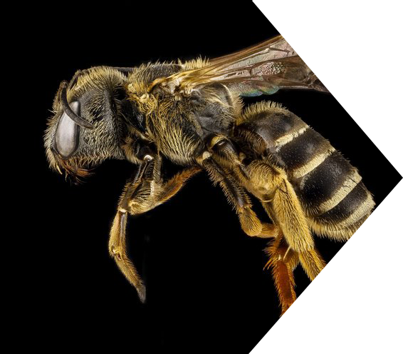
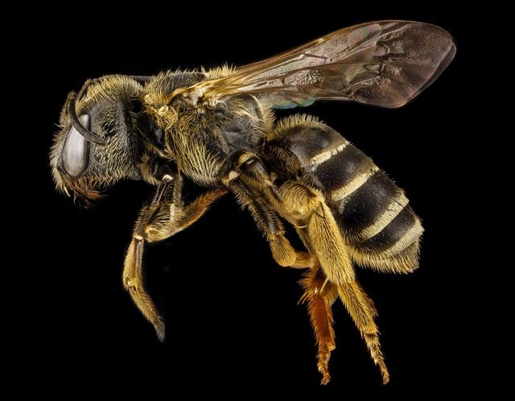
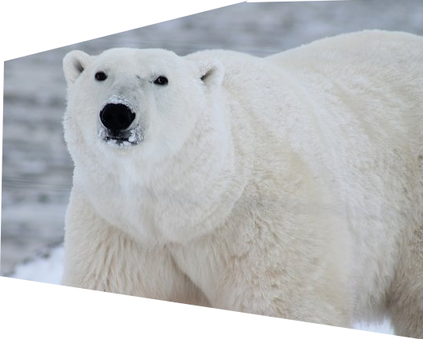
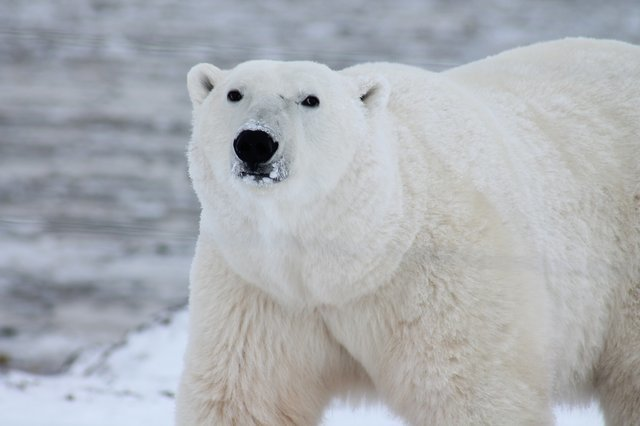

Unsere Rechtsgebiete
Zauberrecht
Magisches Recht ist das System von Regeln, die durch soziale
oder staatliche Institutionen geschaffen und durchgesetzt
werden, um das Verhalten zu regulieren. Das magische Gesetz
ist ein System, das regelt und sicherstellt, dass
Einzelpersonen oder die Zauberergemeinschaft im
Allgemeinen dem Willen des Staates folgen.
Funktion
Sobald eine Hexe oder ein Zauberer die magische Gemeinschaft betritt, müssen sie sich an die bereits bestehenden Gesetze halten, die bereits in Kraft sind. Diese Gesetze bewahren den Frieden und verhindern Anarchie. Sie geben den Bürgern auch eine höhere Befugnis, sich zu beziehen. Infolgedessen wurden ausgefeilte und komplexe Rechtssysteme entwickelt, die darauf abzielen, die Ordnung aufrechtzuerhalten und unsoziales Verhalten zu verhindern. Es gibt auch viele auffällige Parallelen zwischen den rechtlichen Rahmenbedingungen für Muggel und Zauberer, aber es gibt ebenso viele Unterschiede.
Gesetz Struktur
Die verhängten Strafen sind in ihrer Schwere mit den Verbrechen vergleichbar, auf die sie sich beziehen. Diskretion spielt eine Rolle. Harry Potter glaubte zu Recht, dass er wegen der Schwellung von Marjorie Dursley ernsthaft bestraft werden musste, wurde jedoch von Cornelius Fudge beruhigt, dass die Machthaber "keine Menschen nach Askaban schicken, nur um ihre Tanten in die Luft zu jagen". Dies war natürlich nur, weil Cornelius ein Interesse daran hatte, dass Harry frei war. Als Dolores Umbridge dagegen versuchte, den jungen Zauberer zu neutralisieren, versuchte sie nach eigenem Ermessen, ihn am härtesten zu bestrafen und ins Gefängnis zu schicken
geklaut von die Harry Potter wiki
Demirecht
Alle intelligente und semi-intelligenten Kreaturen haben ein form von
Recht in die Gesetzen. Wenn Dinge wie Elfen, Trolle, Kobolde und andere solche
intelligenten humanoiden Kreaturen auf der Erde existieren würden, wäre ein
neues Gesetz erforderlich, das all diese Kreaturen in sich vereint. Dieses
Gesetz würde wahrscheinlich als Demihumanlaw bezeichnet. Wir bei Mustermann
vermuten, dass das Erscheinen solcher Kreaturen den Rassismus wieder erwecken
würde, was wiederum wahrscheinlich Dinge wie Sklaverei und neue Kriege hervorrufen
würde. Es ist fraglich, ob diese Menschen überhaupt als intelligente Wesen
behandelt werden. Sie können stattdessen als Testobjekte oder Haustiere behandelt
werden. Wenn Sie ein Halbmensch sind und eine rassistische Beleidigung oder eine
andere Form von Degradationsbehandlung erlitten haben, können wir Ihnen helfen und
rechtliche Schritte einleiten.
Versklavt? Hier ist was sie machen können
Wenn Sie gegen Ihren Willen oder durch Betrug in einen Sklaven verwandelt wurden,
haben Sie das Recht, Ihren Entführer zu verklagen. Die Kosten für die Vertretung
betragen in diesem Fall 1 Million Gold im Voraus. Ein Sklave darf keine Klagen
selbst einreichen. Die einzigen anderen Optionen sind ein Wahnsinns- oder
Krankheitsanspruch. Wenn Sie Ihrem Meister beweisen können, dass Sie todkrank
sind, lässt er Sie möglicherweise einfach am Straßenrand fallen, wenn Sie Glück
haben, aber wenn es Ihnen nicht gut geht, dann viel Glück ...


Fliegenrecht
Jeder hat das recht auf fliegen. Jeder hat das gleiche Recht und die gleiche Ehre, sich von
kleinen Insekten ärgern zu lassen. Es sind Schädlinge, die wir alle kennen und lieben.
Von der nervigen Masse der Fruchtfliegen bis zum Lied wie das Summen der scheißbedeckten
Stubenfliege. Immer wenn Sie sich nur um Ihre eigenen Geschäfte kümmern, nerven sie Sie
mit ihrer überheblichen Liebe zu allem, was Sie mehr als 24 Stunden lang vergessen haben zu putzen.
Mückenrecht
Wo hast du mit giftigem Gas gesprüht? Dann haben Sie das Recht zu klagen. Das Besprühen von
Mücken mit Gas gilt als Insektenquälerei in der Hölle und wird bestraft, indem der Angeklagte
an eine Stange gebunden und als Blutbank für einen Mückenschwarm verwendet wird.


Polarbärrecht
Jeder Polarbär hat das recht auf 60 kvadrat meter Ice und zwei gekochten pinguins am Tag. Das
haben sie bestimmt nicht gewusst oder? Der Eisbär (Ursus maritimus) ist ein hyperkarnivorischer Bär, dessen
Das heimische Verbreitungsgebiet liegt größtenteils innerhalb des Polarkreises und umfasst den Arktischen Ozean und seine Umgebung
Meere und umliegende Landmassen. Es ist ein großer Bär, ungefähr so groß wie der Allesfresser
Kodiak Bär (Ursus arctos middendorffi). Ein Eber (erwachsener Rüde) wiegt etwa 350–700 kg (772–1.543 lb).
während eine Sau (erwachsene Frau) ungefähr halb so groß ist. Eisbären sind die größten Landfresser
Derzeit vorhanden, nur mit dem Kodiak-Bären konkurriert. Obwohl es die Schwesterspezies ist
des Braunbären hat sich zu einer engeren ökologischen Nische mit vielen Körpermerkmalen entwickelt
angepasst für kalte Temperaturen, zum Bewegen über Schnee, Eis und offenes Wasser und für die Jagd auf Robben, die
machen den größten Teil seiner Ernährung aus. Obwohl die meisten Eisbären an Land geboren werden, verbringen sie die meiste Zeit
auf dem Meereis. Ihr wissenschaftlicher Name bedeutet "Seebär" und leitet sich aus dieser Tatsache ab. Eisbären
Jagen Sie ihre bevorzugte Robbenfutter vom Rand des Meereises aus und leben Sie oft von Fettreserven, wenn nein
Meereis ist vorhanden. Eisbären werden aufgrund ihrer Abhängigkeit vom Meereis als Meeressäuger eingestuft.
geklaut von die Polar bear - Wikipedia